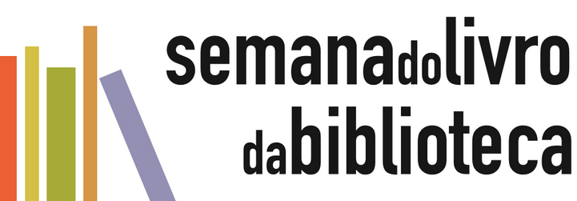

Selibi
Com mais de 25 mil votos o escritor e ilustrador Andre Neves foi escolhido com um grande homenageado da SELIBI 2025 - Semana do livro e da biblioteca da rede SESI SP. A votação contou com a participação de mais de 57 mil pessoas, entre bibliotecários, estudantes e professores.

Dia Mundial do Livro: veja títulos cobrados nos vestibulares 2026
Nesta quarta-feira (23) celebra-se o Dia Mundial do Livro e dos Direitos Autorais, iniciativa da Organização das Nações Unidas para a Educação, a Ciência e a Cultura (Unesco) para promover a leitura, o livro e a proteção dos direitos autorais.
Papa Francisco tem duas autobiografias publicadas; conheça
O papa Francisco, primeiro pontífice latino-americano da história, lançou dois livros autobiográficos antes de sua morte: “Vida: minha história através da história” e “Esperança: a autobiografia”.
40 anos de democracia: veja 10 obras que retratam período da ditadura
Redemocratização do Brasil teve início em 15 de março de 1985, com a posse de José Sarney na Presidência da República.